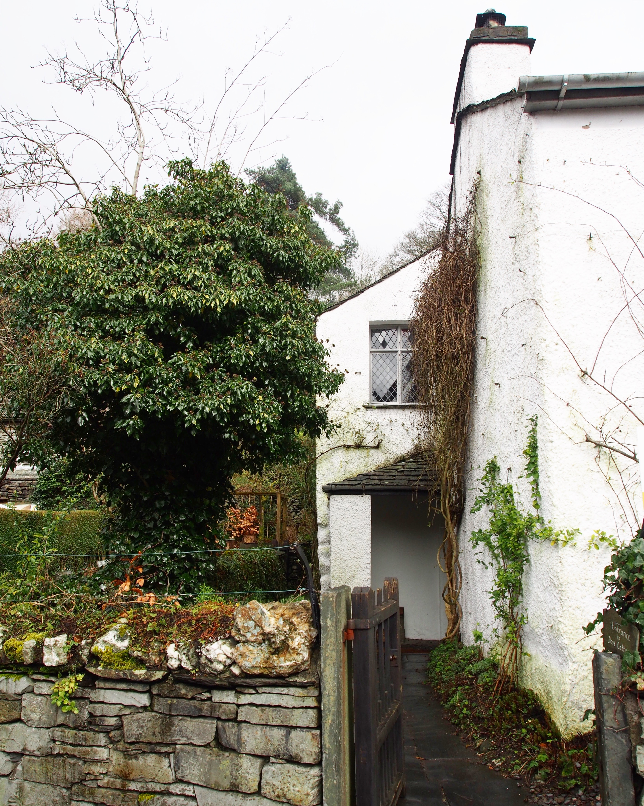
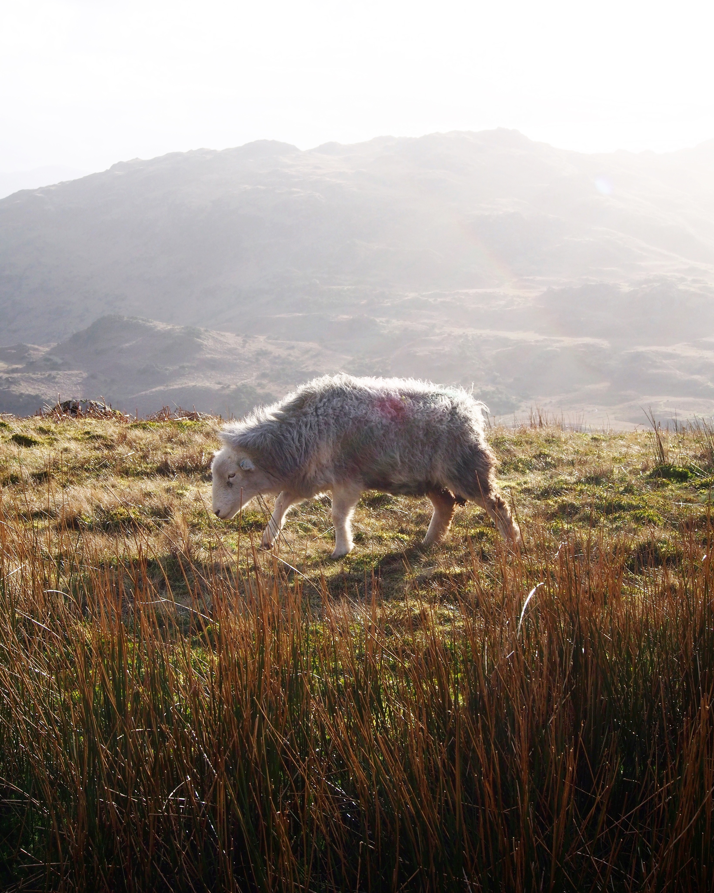
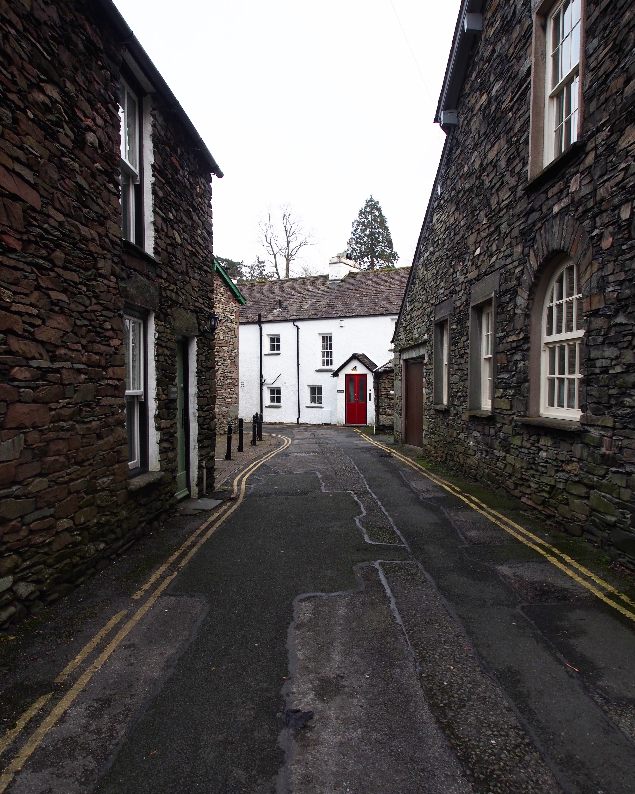

1. Our favorite artists are human. I’ve always questioned the accessibility of Romantic poets. I’ve always been hesitant in the faces of vast catalogues, of established names, of Enlightenment reactionaries, the free-roaming, the supernaturally-inclined, the metaphysical, the intensely personal. Wordsworth, Coleridge, Shelley, Keats, Byron, Blake— skimming the tops of these collections in my AP Literature course had always had the adverse effect of revealing just how much there was left to know. When it comes down to it, William Wordsworth owned a copy of Paradise Lost bound in the skin of his pet dog, Pepper. No one is perfect.
2. We don’t walk nearly enough. According to hosts of concerned locals, Wordsworth often composed his poems while pacing back and forth over the high mountain trails and lovely cobblestone streets of Cumbria. If you’re looking to spearhead the next great return to Romantic verse or the next great American novel, try getting mobile.
3. Family makes a person. Wordsworth’s fair copy manuscripts were never done in his own hand. His penmanship was— put simply— absolutely terrible, so he tasked his sister Dorothy, his wife Mary, and his daughter Dora with the transcription of all of his greatest works. Each new manuscript usually took them upwards of a few months to complete; as a family unit, they needed to be invariably close.
4. There is always more to love than necessity. Before accepting William Wordsworth’s marriage proposal, Mary Wordsworth was rumored to have been courted by Samuel Taylor Coleridge for quite some time. One can only imagine how uncomfortable this must have been, given that they all lived under the same roof. Still, it makes for an interesting testament to romance and friendship in an era where women’s primary roles were unfairly reduced to and typified as homemaking.
5. Empathizing with far-removed times and people inspires awe. I had tea and toast in Dove Cottage, read magazines by the bay window in Rydal Mount—I even played John Ruskin’s piano and threw breadcrumbs to the blackbirds under the archway of Beatrix Potter’s garden. It had me wanting to live their respective realities, too: I climbed to the top of Helm Crag, was buffeted by wind among the Lion and the Lamb, waded into Easedale Tarn, got rained out of Silver Howe, and frequented every tea room, bookstore, and pub from Grasmere to Ambleside and north again to Keswick. It might’ve even been more fun in this century than in the 1800s.
6. Change is as much a constant in place as it is in people. The time of day, the angle of the sun, the density of the mist, the intensity of the rain, the height of the rivers, the power of the waterfalls, the smells in the shop windows, the colors in the streets— Cumbria never looked even remotely the same in our day-to-day experience of it, and that’s an exciting mindset to hold onto, even if Cambridge, Massachusetts doesn’t seem so immediately dynamic.
7. Loss is productive. The memorialization of John Wordsworth is often cited as the driving force behind his brother’s poetic development. In parallel, William’s imagination and perceptions of him are the basis of what scholars now understand about both John Wordsworth’s life and passing. Considering how much Romantic poetry is written in elegiac verse, there is just as much to be gathered from life’s last moments as any others, and the creative process can offer catharsis or stability to some.
8. Put it down on paper. Write a letter. Make your edits in pen or pencil. Wordsworth wrote the first lines of his poem “Michael” between the existing lines of a printed book of poems by Coleridge. You don’t have to be such a jerk about it, maybe, but tangible pieces of writing accrue so much undeniable value over time. There are entire trusts, museums, and galleries dedicated to the preservation, maintenance, and historical importance of manuscripts. When your computer hard drive is wiped, what’s left?
9. The idea of the self is excitingly new. Autobiography in English lyric verse did not exist before the Romantics, and before Wordsworth’s Prelude more specifically. Imagine not having a set language for creative self expression—entire intellectualized movements of subjectivity in art might’ve never existed.
10. You can replace most of your major meals with scones. Cheese scones with smoked salmon and cream cheese are the savory alternative to scones with clotted cream and jam, but you can also just have both.
The Lion and the Lamb at the summit of Helm Crag
Dove Cottage, where Wordsworth lived

The trail following River Rothay up to Easedale Tarn

On the ridges near Easedale Tarn

Side street in Grasmere

Scones from Baldry's